今しか食べられない季節の味覚
design-library.jp
完成例
- アレンジ後
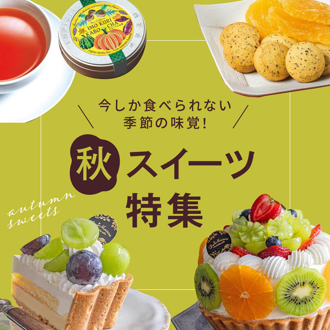
写真を明るく補正
- 「シャドウ・ハイライト」
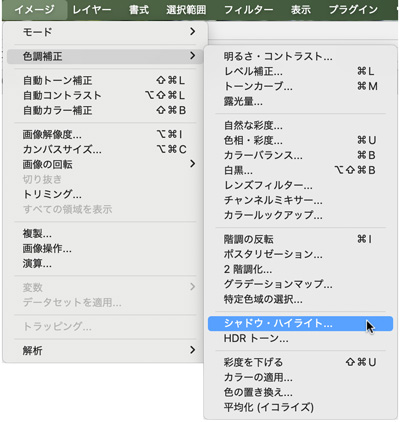
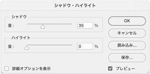
写真を切り抜き
- 「オブジェクト選択ツール」

- 長方形を描くようににドラッグすると自動的に選択範囲が選択できます
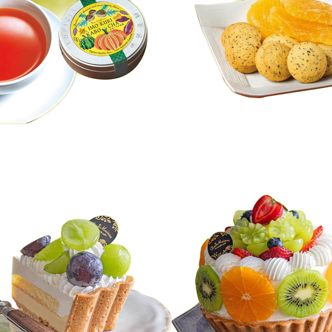
背景レイヤーを描画色で塗りつぶし
- 「Altキー」＋「Deleteキー」
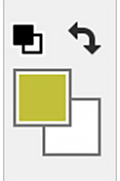
白い正方形の枠線を描く
- 新規レイヤーを追加（レイヤー名「枠線」）
- 「長方形選択ツール」で、「Shiftキー」を押しながら正方形の選択範囲を作成
- 「編集」メニュー → 「境界線を描く（2px：内側）」
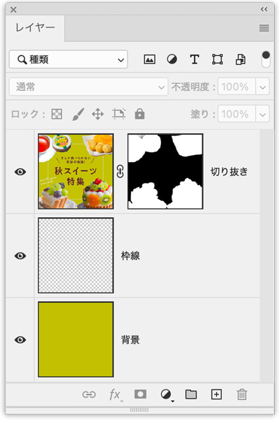
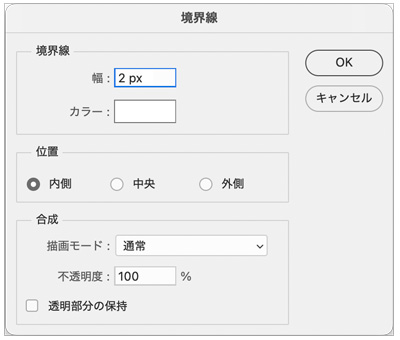
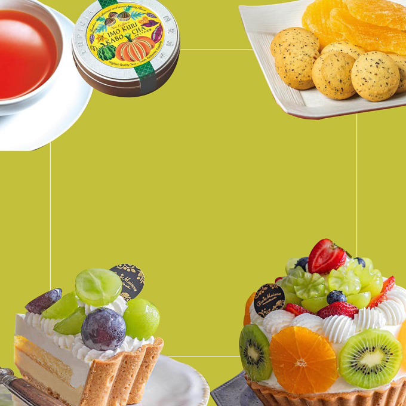
Illustratorで文字を入力
- 可能な限り見本に近い書体を選択
- 「書式」→「アウトライン作成」後、微調整
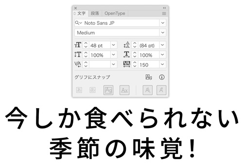
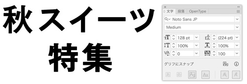
- 文字の丸みは、線幅で加工
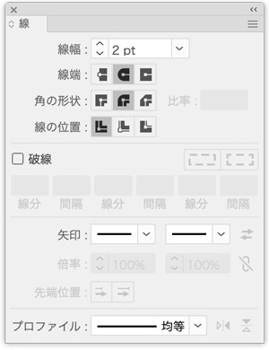
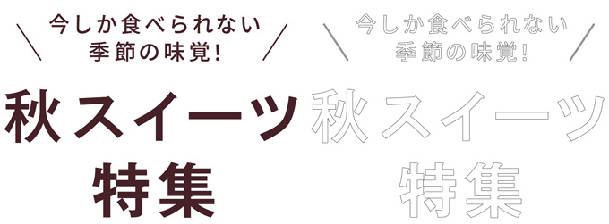
Illustratorのデータをスマートオブジェクトで配置
- Illustratorのデータを「コピー」
- Photoshop上で「ペースト」
- 「ペースト」オプションは「スマートオブジェクト」を選択
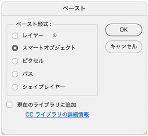
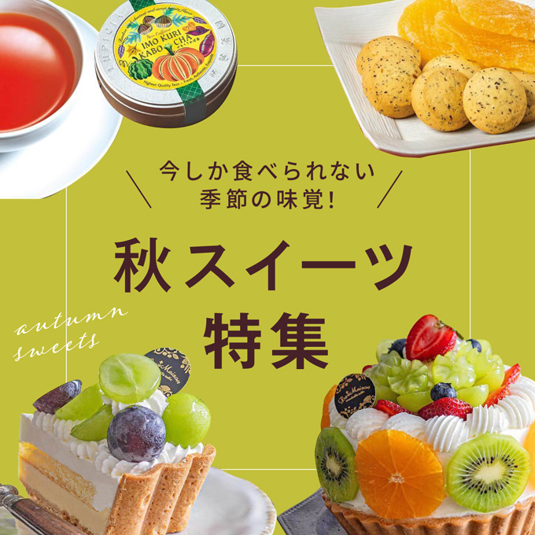
提出ページ作成例
index.html
<!DOCTYPE html> <html lang="ja"> <head> <meta charset="UTF-8"> <meta name="viewport" content="width=device-width, initial-scale=1.0"> <title>POP-UP SHOP</title> <link rel="stylesheet" href="css/style.css"> </head> <body> <!-- header --> <header class="header"> <h1>Photoshop<br>季節の味覚</h1> <p class="btn"><a href="../../index.html#ai_ps">トップへ戻る</a></p> </header> <!-- /header --> <!-- main --> <main class="main"> <div class="container"> <h2>季節の味覚</h2> <div class="content"> <div class="wrapper"> <img src="img/autumn.webp" alt=""> <img src="img/outline.webp" alt=""> <div class="point"> <h3>【制作ポイント】</h3> <ul> <li>引用元「BANNER LIBRARY」</li> <li>構図「日の丸」型でアピールポイントを中心に配置</li> <li>ロゴなどはIllustratorで作成し、「スマートオブジェクト」で配置</li> </ul> </div><!-- /.point --> </div><!-- /.wrapper --> <img src="img/layer.webp" alt=""> </div><!-- /.content --> </div><!-- /.container --> </main> <!-- /main --> <!-- footer --> <footer class="footer"> <p id="update">制作日：xxxx年x月x日</p> </footer> <!-- /footer --> </body> </html>
style.css
@charset "UTF-8"; /* -------------------------------- reset -------------------------------- */ *, *::before, *::after { margin: 0; padding: 0; box-sizing: border-box; } ul { list-style: none; } a { color: inherit; text-decoration: none; } img { max-width: 100%; vertical-align: bottom; } html { font-size: 100%; } /* -------------------------------- body -------------------------------- */ body { display: grid; grid-template-rows: auto 1fr auto; min-height: 100vh; background-color: #fff; color: #333; font-size: 1.0rem; font-family: sans-serif; line-height: 1.8; } /* -------------------------------- header -------------------------------- */ .header { padding: 20px 0; background-color: #75b4db; text-align: center; } .header h1 { color: #fff; font-size: 1.5rem; line-height: 1.4; } .header > h1::first-line { font-size: 1.125rem; } .btn { display: inline-block; width: 100%; margin-top: 10px; border: #fff; } .btn a { padding: 6px 20px; border: 2px solid #fff; color: #fff; font-weight: 700; transition: all .3s; } .btn a:hover { padding: 6px 20px; background-color: #fff; color: #75b4db; } /* -------------------------------- footer -------------------------------- */ .footer { padding: 20px 0; background-color: #75b4db; color: #fff; text-align: center; } /* -------------------------------- main -------------------------------- */ .container { display: grid; gap: 10px; width: min(92%, 1000px); margin: 30px auto; text-align: center; } h2 { font-size: 1.525rem; } .content { display: grid; grid-template-columns: 60% auto; gap: 5px; margin-bottom: 10px; } .wrapper > img { margin-bottom: 10px; } .point { margin-bottom: 10px; text-align: left; } .point > ul { padding-left: 2.0rem; list-style: disc; line-height: 1.5; } @media screen and (max-width: 767px) { h2 { font-size: 1.25rem; } .content { display: block; } .point > ul { font-size: 0.875rem; } }
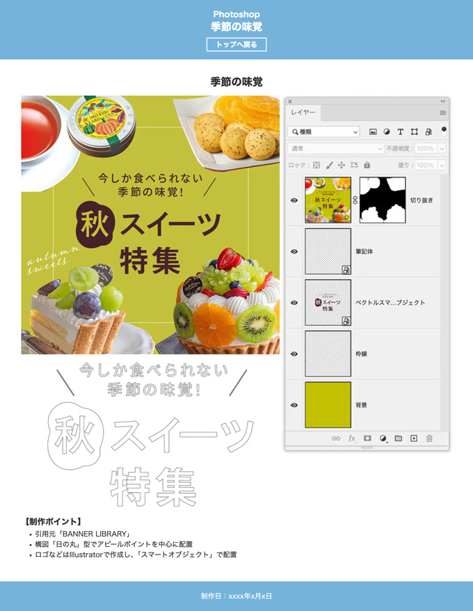